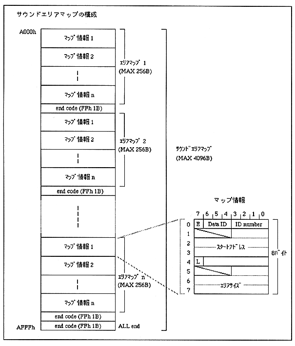

Return to previous page ｜ Return to menu ｜ Go to next page
6.8 Sound Area Map
The sound area map is a combination of all area maps in the game, created (output) by the sound simulator of the sound development tool.
Each area map has a 1-byte end code (FFh) at the end, and an all-end code (FFh) at the end of the sound area map. The size of the sound area map is variable, and its size is determined by the number of area maps, but it can be up to 4096 bytes.

Return to previous page ｜ Return to menu ｜ Go to next page